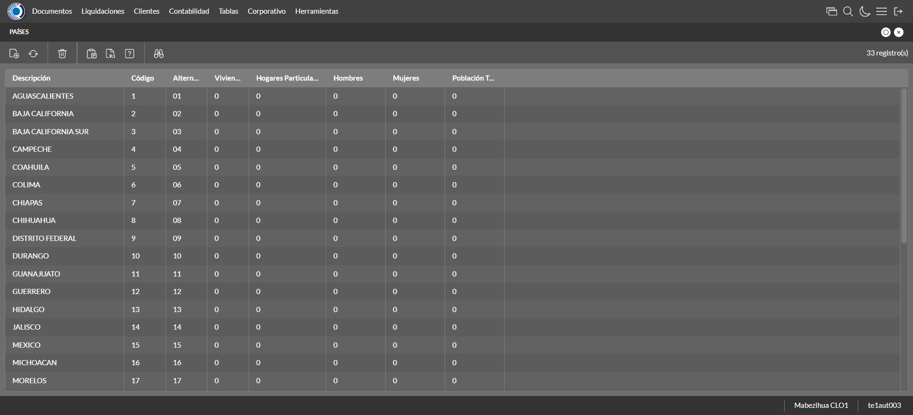
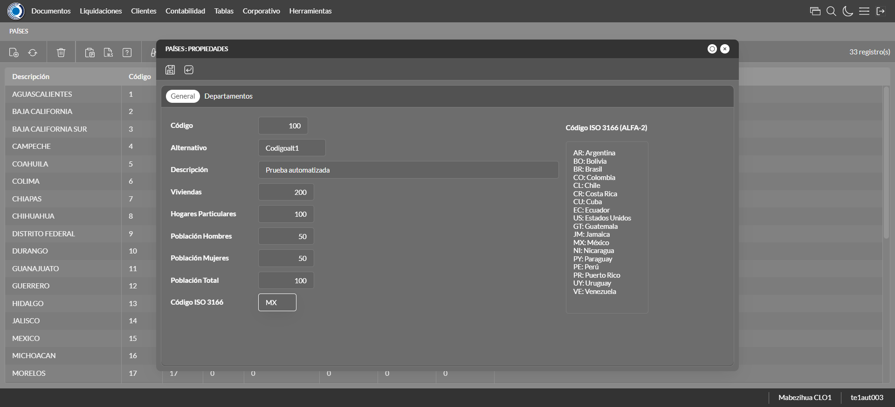
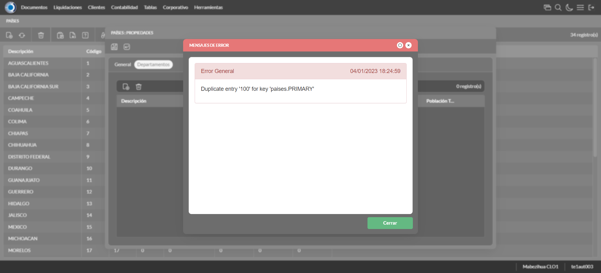
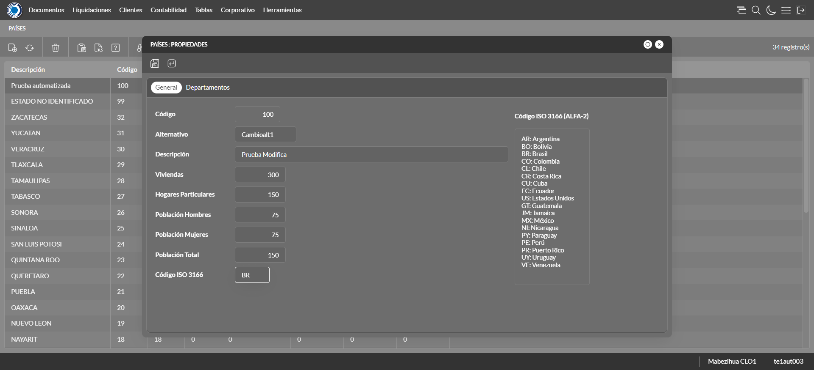
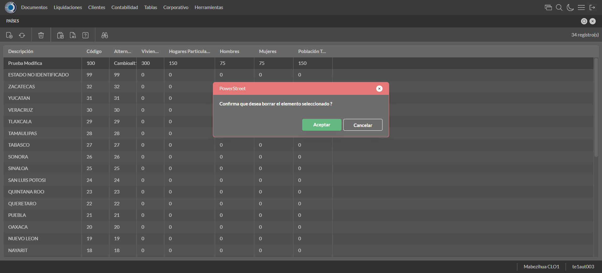

Desarrollado por : Area de Testing PWST
Fecha y hora de inicio : 2023-01-04 12:23:45
Duracion : 0:02:10.246702
Resultado : Total 8，Correctos 7 ，Errores 1 ，Taza de resultado 87.50%
Resumen 87.50% Errores 1 Fallidos 0 Correctos 7 Test realizados 8
| Caso de Prueba | Total | Correctos | Fallido | Error | Detalles | Captura del error |
| UbicacionesGeograficas.Test: Escenario 1 de Ubicaciones Geograficas | 8 | 7 | 0 | 1 | Detalles | |
test |
ft1_1: 2023-01-04 12:23:46,260 - root - INFO - Se abre el chrome
2023-01-04 12:23:48,769 - root - INFO - Entra a la URL
2023-01-04 12:23:48,912 - root - INFO - Maximiza la pantalla
Traceback (most recent call last):
File "C:\Users\jsand\AppData\Local\Programs\Python\Python310\lib\site-packages\selenium-4.4.0-py3.10.egg\selenium\webdriver\remote\switch_to.py", line 87, in frame
frame_reference = self._driver.find_element(By.ID, frame_reference)
File "C:\Users\jsand\AppData\Local\Programs\Python\Python310\lib\site-packages\selenium-4.4.0-py3.10.egg\selenium\webdriver\remote\webdriver.py", line 856, in find_element
return self.execute(Command.FIND_ELEMENT, {
File "C:\Users\jsand\AppData\Local\Programs\Python\Python310\lib\site-packages\selenium-4.4.0-py3.10.egg\selenium\webdriver\remote\webdriver.py", line 434, in execute
self.error_handler.check_response(response)
File "C:\Users\jsand\AppData\Local\Programs\Python\Python310\lib\site-packages\selenium-4.4.0-py3.10.egg\selenium\webdriver\remote\errorhandler.py", line 243, in check_response
raise exception_class(message, screen, stacktrace)
selenium.common.exceptions.NoSuchElementException: Message: no such element: Unable to locate element: {"method":"css selector","selector":"[id="mainFrame"]"}
(Session info: chrome=108.0.5359.125)
Stacktrace:
Backtrace:
(No symbol) [0x0073F243]
(No symbol) [0x006C7FD1]
(No symbol) [0x005BD04D]
(No symbol) [0x005EC0B0]
(No symbol) [0x005EC22B]
(No symbol) [0x0061E612]
(No symbol) [0x006085D4]
(No symbol) [0x0061C9EB]
(No symbol) [0x00608386]
(No symbol) [0x005E163C]
(No symbol) [0x005E269D]
GetHandleVerifier [0x009D9A22+2655074]
GetHandleVerifier [0x009CCA24+2601828]
GetHandleVerifier [0x007E8C0A+619850]
GetHandleVerifier [0x007E7830+614768]
(No symbol) [0x006D05FC]
(No symbol) [0x006D5968]
(No symbol) [0x006D5A55]
(No symbol) [0x006E051B]
BaseThreadInitThunk [0x76796BD9+25]
RtlGetFullPathName_UEx [0x77B58FD2+1218]
RtlGetFullPathName_UEx [0x77B58F9D+1165]
During handling of the above exception, another exception occurred:
Traceback (most recent call last):
File "C:\Users\jsand\AppData\Local\Programs\Python\Python310\lib\site-packages\selenium-4.4.0-py3.10.egg\selenium\webdriver\remote\switch_to.py", line 90, in frame
frame_reference = self._driver.find_element(By.NAME, frame_reference)
File "C:\Users\jsand\AppData\Local\Programs\Python\Python310\lib\site-packages\selenium-4.4.0-py3.10.egg\selenium\webdriver\remote\webdriver.py", line 856, in find_element
return self.execute(Command.FIND_ELEMENT, {
File "C:\Users\jsand\AppData\Local\Programs\Python\Python310\lib\site-packages\selenium-4.4.0-py3.10.egg\selenium\webdriver\remote\webdriver.py", line 434, in execute
self.error_handler.check_response(response)
File "C:\Users\jsand\AppData\Local\Programs\Python\Python310\lib\site-packages\selenium-4.4.0-py3.10.egg\selenium\webdriver\remote\errorhandler.py", line 243, in check_response
raise exception_class(message, screen, stacktrace)
selenium.common.exceptions.NoSuchElementException: Message: no such element: Unable to locate element: {"method":"css selector","selector":"[name="mainFrame"]"}
(Session info: chrome=108.0.5359.125)
Stacktrace:
Backtrace:
(No symbol) [0x0073F243]
(No symbol) [0x006C7FD1]
(No symbol) [0x005BD04D]
(No symbol) [0x005EC0B0]
(No symbol) [0x005EC22B]
(No symbol) [0x0061E612]
(No symbol) [0x006085D4]
(No symbol) [0x0061C9EB]
(No symbol) [0x00608386]
(No symbol) [0x005E163C]
(No symbol) [0x005E269D]
GetHandleVerifier [0x009D9A22+2655074]
GetHandleVerifier [0x009CCA24+2601828]
GetHandleVerifier [0x007E8C0A+619850]
GetHandleVerifier [0x007E7830+614768]
(No symbol) [0x006D05FC]
(No symbol) [0x006D5968]
(No symbol) [0x006D5A55]
(No symbol) [0x006E051B]
BaseThreadInitThunk [0x76796BD9+25]
RtlGetFullPathName_UEx [0x77B58FD2+1218]
RtlGetFullPathName_UEx [0x77B58F9D+1165]
During handling of the above exception, another exception occurred:
Traceback (most recent call last):
File "C:\xampp\htdocs\versiones\automatizaciones\AutoPWST\01UG\testCase\UbicacionesGeograficas.py", line 36, in test
self.driver.switch_to.frame("mainFrame")
File "C:\Users\jsand\AppData\Local\Programs\Python\Python310\lib\site-packages\selenium-4.4.0-py3.10.egg\selenium\webdriver\remote\switch_to.py", line 92, in frame
raise NoSuchFrameException(frame_reference)
selenium.common.exceptions.NoSuchFrameException: Message: mainFrame
|
|
||||
test_000: Ingresa a la base de datos |
pt1_2: 2023-01-04 12:23:52,372 - root - INFO - Escribe el usuario
2023-01-04 12:23:52,772 - root - INFO - Escribe la contraseña
2023-01-04 12:23:53,102 - root - INFO - Se dio clic en el boton ingresar
2023-01-04 12:23:54,942 - root - INFO - Ejecutar Enterprise
2023-01-04 12:23:59,149 - root - INFO - Cambia entre pestañas
|
|
||||
test_001: Abre menu y ejecuta pantalla |
pt1_3: 2023-01-04 12:24:14,001 - root - INFO - Abre la pantalla de Paises
2023-01-04 12:24:15,168 - root - INFO - La pantalla ejecutada es Paises.
2023-01-04 12:24:15,169 - root - INFO - Captura: C:\xampp\htdocs\versiones\automatizaciones\AutoPWST\01UG\report\img screen：20230104_12_24_15.png
2023-01-04 12:24:25,876 - root - INFO - Se presiona el boton 'Nuevo', para crear un nuevo registro.
|
 | ||||
test_002: Abre la ventana de nuevo y crear un registro |
pt1_4: 2023-01-04 12:24:26,445 - root - INFO - Se abrio la pantalla para el ingreso de un registro nuevo.
2023-01-04 12:24:26,478 - root - INFO - El campo 'Codigo' si se encuentra visible.
2023-01-04 12:24:26,519 - root - INFO - El campo 'Alternativo' si se encuentra visible.
2023-01-04 12:24:26,552 - root - INFO - El campo 'Descrición' si se encuentra visible.
2023-01-04 12:24:26,584 - root - INFO - El campo 'Viviendas' si se encuentra visible.
2023-01-04 12:24:26,629 - root - INFO - El campo 'Hogares Particulares' si se encuentra visible.
2023-01-04 12:24:26,662 - root - INFO - El campo 'Población Hombres' si se encuentra visible.
2023-01-04 12:24:26,693 - root - INFO - El campo 'Población Mujeres' si se encuentra visible.
2023-01-04 12:24:26,723 - root - INFO - El campo 'Población Total' si se encuentra visible.
2023-01-04 12:24:26,754 - root - INFO - El campo 'Código ISO 3166' si se encuentra visible.
2023-01-04 12:24:26,803 - root - INFO - Ingresa el codigo del nuevo registro
2023-01-04 12:24:26,882 - root - INFO - Ingresa el codigo alternativo del nuevo registro
2023-01-04 12:24:26,998 - root - INFO - Ingresa la descripción del nuevo registro
2023-01-04 12:24:27,066 - root - INFO - Ingresa el número de viviendas del nuevo registro
2023-01-04 12:24:27,131 - root - INFO - Ingresa el número de hogares particulares del nuevo registro
2023-01-04 12:24:27,196 - root - INFO - Ingresa el número de Población de hombres del nuevo registro
2023-01-04 12:24:27,287 - root - INFO - Ingresa el número de Población de mujeres del nuevo registro
2023-01-04 12:24:27,355 - root - INFO - Ingresa el número de Población Total del nuevo registro
2023-01-04 12:24:27,422 - root - INFO - Ingresa el Codigo ISO del nuevo registro
2023-01-04 12:24:28,435 - root - INFO - Captura: C:\xampp\htdocs\versiones\automatizaciones\AutoPWST\01UG\report\img screen：20230104_12_24_28.png
2023-01-04 12:24:29,735 - root - INFO - Se hace el cambio de pestaña para continuar con el registro nuevo
2023-01-04 12:24:30,343 - root - INFO - Se presiona el boton 'Nuevo', para crear un nuevo registro.
2023-01-04 12:24:30,927 - root - INFO - El campo 'Codigo' si se encuentra visible.
2023-01-04 12:24:30,971 - root - INFO - El campo 'Alternativo' si se encuentra visible.
2023-01-04 12:24:31,012 - root - INFO - El campo 'Descrición' si se encuentra visible.
2023-01-04 12:24:31,052 - root - INFO - El campo 'Impuesto' si se encuentra visible.
2023-01-04 12:24:31,091 - root - INFO - El campo 'Viviendas' si se encuentra visible.
2023-01-04 12:24:31,130 - root - INFO - El campo 'Hogares Particulares' si se encuentra visible.
2023-01-04 12:24:31,205 - root - INFO - El campo 'Población Hombres' si se encuentra visible.
2023-01-04 12:24:31,245 - root - INFO - El campo 'Población Mujeres' si se encuentra visible.
2023-01-04 12:24:31,289 - root - INFO - El campo 'Población Total' si se encuentra visible.
2023-01-04 12:24:31,353 - root - INFO - Ingresa el codigo del nuevo registro
2023-01-04 12:24:31,470 - root - INFO - Ingresa el codigo alternativo del nuevo registro
2023-01-04 12:24:31,610 - root - INFO - Ingresa la descripción del nuevo registro
2023-01-04 12:24:32,952 - root - INFO - Ingresa el número de viviendas del nuevo registro
2023-01-04 12:24:33,188 - root - INFO - Ingresa el número de hogares particulares del nuevo registro
2023-01-04 12:24:33,392 - root - INFO - Ingresa el número de Población de hombres del nuevo registro
2023-01-04 12:24:33,570 - root - INFO - Ingresa el número de Población de mujeres del nuevo registro
2023-01-04 12:24:33,722 - root - INFO - Ingresa el número de Población Total del nuevo registro
2023-01-04 12:24:33,893 - root - INFO - Se hace el cambio de pestaña para continuar con el registro nuevo
2023-01-04 12:24:34,582 - root - INFO - Se presiona el boton 'Nuevo', para crear un nuevo registro.
2023-01-04 12:24:35,221 - root - INFO - El campo 'Localidad' si se encuentra visible.
2023-01-04 12:24:35,407 - root - INFO - El campo 'Alternativo' si se encuentra visible.
2023-01-04 12:24:35,485 - root - INFO - El campo 'Descrición' si se encuentra visible.
2023-01-04 12:24:35,570 - root - INFO - El campo 'Viviendas' si se encuentra visible.
2023-01-04 12:24:35,657 - root - INFO - El campo 'Hogares Particulares' si se encuentra visible.
2023-01-04 12:24:35,749 - root - INFO - El campo 'Población Hombres' si se encuentra visible.
2023-01-04 12:24:35,838 - root - INFO - El campo 'Población Mujeres' si se encuentra visible.
2023-01-04 12:24:35,909 - root - INFO - El campo 'Población Total' si se encuentra visible.
2023-01-04 12:24:36,027 - root - INFO - Ingresa el codigo del nuevo registro
2023-01-04 12:24:36,207 - root - INFO - Ingresa el codigo alternativo del nuevo registro
2023-01-04 12:24:36,401 - root - INFO - Ingresa la descripción del nuevo registro
2023-01-04 12:24:36,571 - root - INFO - Ingresa el número de viviendas del nuevo registro
2023-01-04 12:24:36,729 - root - INFO - Ingresa el número de hogares particulares del nuevo registro
2023-01-04 12:24:36,891 - root - INFO - Ingresa el número de Población de hombres del nuevo registro
2023-01-04 12:24:37,068 - root - INFO - Ingresa el número de Población de mujeres del nuevo registro
2023-01-04 12:24:37,254 - root - INFO - Ingresa el número de Población Total del nuevo registro
2023-01-04 12:24:37,437 - root - INFO - Se hace el cambio de pestaña para continuar con el registro nuevo
2023-01-04 12:24:38,158 - root - INFO - Se presiona el boton 'Nuevo', para crear un nuevo registro.
2023-01-04 12:24:38,793 - root - INFO - El campo 'Código' si se encuentra visible.
2023-01-04 12:24:39,057 - root - INFO - El campo 'Alternativo' si se encuentra visible.
2023-01-04 12:24:39,164 - root - INFO - El campo 'Descrición' si se encuentra visible.
2023-01-04 12:24:39,268 - root - INFO - El campo 'Viviendas' si se encuentra visible.
2023-01-04 12:24:39,359 - root - INFO - El campo 'Hogares Particulares' si se encuentra visible.
2023-01-04 12:24:39,428 - root - INFO - El campo 'Población Hombres' si se encuentra visible.
2023-01-04 12:24:39,493 - root - INFO - El campo 'Población Mujeres' si se encuentra visible.
2023-01-04 12:24:39,559 - root - INFO - El campo 'Población Total' si se encuentra visible.
2023-01-04 12:24:39,665 - root - INFO - Ingresa el codigo del nuevo registro
2023-01-04 12:24:39,832 - root - INFO - Ingresa el codigo alternativo del nuevo registro
2023-01-04 12:24:40,004 - root - INFO - Ingresa la descripción del nuevo registro
2023-01-04 12:24:40,163 - root - INFO - Ingresa el número de viviendas del nuevo registro
2023-01-04 12:24:40,327 - root - INFO - Ingresa el número de hogares particulares del nuevo registro
2023-01-04 12:24:40,501 - root - INFO - Ingresa el número de Población de hombres del nuevo registro
2023-01-04 12:24:40,674 - root - INFO - Ingresa el número de Población de mujeres del nuevo registro
2023-01-04 12:24:40,857 - root - INFO - Ingresa el número de Población Total del nuevo registro
2023-01-04 12:24:41,056 - root - INFO - Se da clic en el boton Guardar; se debe crear un nuevo registro.
2023-01-04 12:24:41,353 - root - INFO - Se da clic en el boton Guardar; se debe crear un nuevo registro.
2023-01-04 12:24:41,752 - root - INFO - Se hace el cambio de pestaña para continuar con el registro nuevo
2023-01-04 12:24:42,477 - root - INFO - Se presiona el boton 'Nuevo', para crear un nuevo registro.
2023-01-04 12:24:43,175 - root - INFO - El campo 'Artículo' si se encuentra visible.
2023-01-04 12:24:43,268 - root - INFO - El campo 'Impuesto' si se encuentra visible.
2023-01-04 12:24:51,692 - root - INFO - Se da clic en el boton Guardar; se debe crear un nuevo registro.
2023-01-04 12:24:52,440 - root - INFO - Se da clic en el boton Guardar; se debe crear un nuevo registro.
2023-01-04 12:24:52,832 - root - INFO - Se da clic en el boton Guardar; se debe crear un nuevo registro.
|
 | ||||
test_003: Repetir el registro creado anteriormente |
pt1_5: 2023-01-04 12:24:53,555 - root - INFO - Se presiona el boton 'Refrescar', para crear un nuevo registro igual al anterior.
2023-01-04 12:24:54,131 - root - INFO - Se presiona el boton 'Nuevo', para crear un nuevo registro igual al anterior.
2023-01-04 12:24:54,778 - root - INFO - Ingresa el codigo del nuevo registro
2023-01-04 12:24:54,926 - root - INFO - Ingresa el codigo alternativo del nuevo registro
2023-01-04 12:24:55,080 - root - INFO - Ingresa la descripción del nuevo registro
2023-01-04 12:24:55,194 - root - INFO - Ingresa el número de viviendas del nuevo registro
2023-01-04 12:24:55,314 - root - INFO - Ingresa el número de hogares particulares del nuevo registro
2023-01-04 12:24:55,430 - root - INFO - Ingresa el número de Población de hombres del nuevo registro
2023-01-04 12:24:55,544 - root - INFO - Ingresa el número de Población de mujeres del nuevo registro
2023-01-04 12:24:55,677 - root - INFO - Ingresa el número de Población Total del nuevo registro
2023-01-04 12:24:55,824 - root - INFO - Ingresa el Codigo ISO del nuevo registro
2023-01-04 12:24:56,837 - root - INFO - Captura: C:\xampp\htdocs\versiones\automatizaciones\AutoPWST\01UG\report\img screen：20230104_12_24_56.png
2023-01-04 12:24:58,201 - root - INFO - Se hace el cambio de pestaña para continuar con el registro nuevo
2023-01-04 12:24:58,509 - root - INFO - Se da clic en el boton Guardar; se debe crear un nuevo registro.
2023-01-04 12:24:59,513 - root - INFO - Captura: C:\xampp\htdocs\versiones\automatizaciones\AutoPWST\01UG\report\img screen：20230104_12_24_59.png
2023-01-04 12:25:04,997 - root - INFO - Se presiona el boton 'Cerrar', para cerrar el mensaje de duplicidad de llave primaria
2023-01-04 12:25:06,000 - root - INFO - Captura: C:\xampp\htdocs\versiones\automatizaciones\AutoPWST\01UG\report\img screen：20230104_12_25_05.png
2023-01-04 12:25:06,242 - root - INFO - Se presiona el boton 'Cerrar', para cerrar el mensaje de duplicidad de llave primaria
2023-01-04 12:25:06,472 - root - INFO - Se presiona el boton 'Cerrar', para cerrar la ventana
|
 | ||||
test_004: Modificar el registro |
pt1_6: 2023-01-04 12:25:06,624 - root - INFO - Se presiona el boton 'Refrescar', para crear un nuevo registro igual al anterior.
2023-01-04 12:25:08,173 - root - INFO - Se presiona el boton 'Codigo', para buscar un nuevo registro y poder modificarlo.
2023-01-04 12:25:09,819 - root - INFO - Se da clic en el registro creado, para proceder a modificarlo.
2023-01-04 12:25:10,452 - root - INFO - Ingresa el codigo alternativo del nuevo registro
2023-01-04 12:25:10,579 - root - INFO - Ingresa la descripción del nuevo registro
2023-01-04 12:25:10,693 - root - INFO - Ingresa el número de viviendas del nuevo registro
2023-01-04 12:25:10,829 - root - INFO - Ingresa el número de hogares particulares del nuevo registro
2023-01-04 12:25:10,962 - root - INFO - Ingresa el número de Población de hombres del nuevo registro
2023-01-04 12:25:11,123 - root - INFO - Ingresa el número de Población de mujeres del nuevo registro
2023-01-04 12:25:11,280 - root - INFO - Ingresa el número de Población Total del nuevo registro
2023-01-04 12:25:11,477 - root - INFO - Ingresa el Codigo ISO del nuevo registro
2023-01-04 12:25:12,492 - root - INFO - Captura: C:\xampp\htdocs\versiones\automatizaciones\AutoPWST\01UG\report\img screen：20230104_12_25_12.png
2023-01-04 12:25:13,846 - root - INFO - Se hace el cambio de pestaña para continuar con el registro nuevo
2023-01-04 12:25:14,968 - root - INFO - Se da clic en el registro creado, para proceder a modificarlo.
2023-01-04 12:25:15,622 - root - INFO - Ingresa el codigo alternativo del nuevo registro
2023-01-04 12:25:15,789 - root - INFO - Ingresa la descripción del nuevo registro
2023-01-04 12:25:17,201 - root - INFO - Ingresa el número de viviendas del nuevo registro
2023-01-04 12:25:17,415 - root - INFO - Ingresa el número de hogares particulares del nuevo registro
2023-01-04 12:25:17,623 - root - INFO - Ingresa el número de Población de hombres del nuevo registro
2023-01-04 12:25:17,834 - root - INFO - Ingresa el número de Población de mujeres del nuevo registro
2023-01-04 12:25:18,053 - root - INFO - Ingresa el número de Población Total del nuevo registro
2023-01-04 12:25:18,213 - root - INFO - Se hace el cambio de pestaña para continuar con el registro nuevo
2023-01-04 12:25:19,387 - root - INFO - Se da clic en el registro creado, para proceder a modificarlo.
2023-01-04 12:25:20,089 - root - INFO - Ingresa el codigo alternativo del nuevo registro
2023-01-04 12:25:20,284 - root - INFO - Ingresa la descripción del nuevo registro
2023-01-04 12:25:20,462 - root - INFO - Ingresa el número de viviendas del nuevo registro
2023-01-04 12:25:20,659 - root - INFO - Ingresa el número de hogares particulares del nuevo registro
2023-01-04 12:25:20,897 - root - INFO - Ingresa el número de Población de hombres del nuevo registro
2023-01-04 12:25:21,122 - root - INFO - Ingresa el número de Población de mujeres del nuevo registro
2023-01-04 12:25:21,480 - root - INFO - Ingresa el número de Población Total del nuevo registro
2023-01-04 12:25:21,726 - root - INFO - Se hace el cambio de pestaña para continuar con el registro nuevo
2023-01-04 12:25:22,989 - root - INFO - Se da clic en el registro creado, para proceder a modificarlo.
2023-01-04 12:25:23,720 - root - INFO - Ingresa el codigo alternativo del nuevo registro
2023-01-04 12:25:23,964 - root - INFO - Ingresa la descripción del nuevo registro
2023-01-04 12:25:24,177 - root - INFO - Ingresa el número de viviendas del nuevo registro
2023-01-04 12:25:24,414 - root - INFO - Ingresa el número de hogares particulares del nuevo registro
2023-01-04 12:25:24,645 - root - INFO - Ingresa el número de Población de hombres del nuevo registro
2023-01-04 12:25:24,898 - root - INFO - Ingresa el número de Población de mujeres del nuevo registro
2023-01-04 12:25:25,162 - root - INFO - Ingresa el número de Población Total del nuevo registro
2023-01-04 12:25:25,362 - root - INFO - Se da clic en el boton Guardar; se debe crear un nuevo registro.
2023-01-04 12:25:25,685 - root - INFO - Se da clic en el boton Guardar; se debe crear un nuevo registro.
2023-01-04 12:25:25,997 - root - INFO - Se hace el cambio de pestaña para continuar con el registro nuevo
2023-01-04 12:25:27,273 - root - INFO - Se da clic en el registro creado, para proceder a modificarlo.
2023-01-04 12:25:31,543 - root - INFO - Se da clic en el boton Guardar; se debe crear un nuevo registro.
2023-01-04 12:25:32,233 - root - INFO - Se da clic en el boton Guardar; se debe crear un nuevo registro.
2023-01-04 12:25:32,837 - root - INFO - Se da clic en el boton Guardar; se debe modificar la informacion del registro.
|
 | ||||
test_005: Eliminar el registro creado |
pt1_7: 2023-01-04 12:25:33,325 - root - INFO - Se presiona el boton 'Refrescar', para proceder a eliminar el registro.
2023-01-04 12:25:36,275 - root - INFO - Se da clic en el registro creado, para proceder a eliminarlo.
2023-01-04 12:25:36,882 - root - INFO - Se hace el cambio de pestaña para continuar con el registro nuevo
2023-01-04 12:25:38,011 - root - INFO - Se da clic en el registro creado, para proceder a modificarlo.
2023-01-04 12:25:38,612 - root - INFO - Se hace el cambio de pestaña para continuar con el registro nuevo
2023-01-04 12:25:39,759 - root - INFO - Se da clic en el registro creado, para proceder a modificarlo.
2023-01-04 12:25:40,371 - root - INFO - Se hace el cambio de pestaña para continuar con el registro nuevo
2023-01-04 12:25:41,464 - root - INFO - Se da clic en el registro creado, para proceder a modificarlo.
2023-01-04 12:25:41,586 - root - INFO - Se presiona el boton 'Eliminar', para eliminar el registro.
2023-01-04 12:25:41,744 - root - INFO - Se da clic en el boton Guardar; se debe crear un nuevo registro.
2023-01-04 12:25:42,032 - root - INFO - Se da clic en el boton Guardar; se debe crear un nuevo registro.
2023-01-04 12:25:42,283 - root - INFO - Se da clic en el boton Guardar; se debe modificar la informacion del registro.
2023-01-04 12:25:42,941 - root - INFO - Se da clic en el registro creado, para proceder a eliminarlo.
2023-01-04 12:25:43,569 - root - INFO - Se hace el cambio de pestaña para continuar con el registro nuevo
2023-01-04 12:25:44,705 - root - INFO - Se da clic en el registro creado, para proceder a modificarlo.
2023-01-04 12:25:45,301 - root - INFO - Se hace el cambio de pestaña para continuar con el registro nuevo
2023-01-04 12:25:46,397 - root - INFO - Se da clic en el registro creado, para proceder a modificarlo.
2023-01-04 12:25:46,507 - root - INFO - Se presiona el boton 'Eliminar', para eliminar el registro.
2023-01-04 12:25:46,645 - root - INFO - Se hace el cambio de pestaña para continuar con el registro nuevo
2023-01-04 12:25:47,813 - root - INFO - Se da clic en el registro creado, para proceder a modificarlo.
2023-01-04 12:25:47,922 - root - INFO - Se presiona el boton 'Eliminar', para eliminar el registro.
2023-01-04 12:25:48,088 - root - INFO - Se da clic en el boton Guardar; se debe crear un nuevo registro.
2023-01-04 12:25:48,340 - root - INFO - Se da clic en el boton Guardar; se debe modificar la informacion del registro.
2023-01-04 12:25:48,977 - root - INFO - Se da clic en el registro creado, para proceder a eliminarlo.
2023-01-04 12:25:49,576 - root - INFO - Se hace el cambio de pestaña para continuar con el registro nuevo
2023-01-04 12:25:50,666 - root - INFO - Se da clic en el registro creado, para proceder a modificarlo.
2023-01-04 12:25:50,752 - root - INFO - Se presiona el boton 'Eliminar', para eliminar el registro.
2023-01-04 12:25:50,921 - root - INFO - Se da clic en el boton Guardar; se debe modificar la informacion del registro.
2023-01-04 12:25:51,200 - root - INFO - Se presiona el boton 'Eliminar', para eliminar el registro.
2023-01-04 12:25:52,207 - root - INFO - Captura: C:\xampp\htdocs\versiones\automatizaciones\AutoPWST\01UG\report\img screen：20230104_12_25_52.png
2023-01-04 12:25:52,442 - root - INFO - Se confirma el eliminado del registro
2023-01-04 12:25:52,801 - root - INFO - Se presiona el boton 'Refrescar', para crear un nuevo registro igual al anterior.
2023-01-04 12:25:53,110 - root - INFO - Se presiona el boton 'Cerrar', para cerrar la pantalla de Categorias Fiscales.
|
 | ||||
test_006: Cerrar_Navegador |
pt1_8: 2023-01-04 12:25:55,376 - root - INFO - Se cierra chrome
|
|
||||
| Caso de prueba | 8 | 7 | 0 | 1 | Taza de resultado：87.50% | |